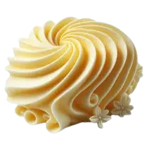

Buttercream!

El buttercream o crema de mantequilla es ideal tanto para rellenar y cubrir como para decorar tartas, cupcakes, pasteles... Puedes aplicarla en tus dulces con espátula o utilizarla con manga pastelera y boquillas.
Para preparar esta deliciosa crema necesitas muy pocos ingredientes: mantequilla, azúcar glass (icing sugar, azúcar glasé o azúcar impalpable), vainilla, leche y poco más.
La preparación del buttercream es muy sencilla pero si es la primera vez que la haces puede que tengas dudas y en este post te vamos a contar un montón de trucos y consejos para que tu buttercream te quede perfecta ¿Empezamos?
Ingredientes:
- 250 gr de Mantequilla
- 250 300 gr de Icing sugar
- 2 cdas de Leche
- 1 cda Vainilla en pasta
- Una pizca de sal
Pasos:
- Para empezar, vas a necesitar que la mantequilla esté un poco blanda, así que calenála un poco en el microondas o dejá que se ablande a temperatura ambiente.
- Cuando sea manejable, comenzá a batirla, hasta obtener una crema. Entonces agregá el extracto de vainilla, con una cucharada es suficiente, y vuelve a batir para unificar los sabores.
- Añade entonces el azúcar glass y ahora bate con más fuerza, para que el azúcar se disuelva en la masa y quede integrada por completo entre los ingredientes.
- Ahora vas a añadir la leche y volvé a batir otra vez por unos minutos, hasta que quede una pasta un poco más consistente y homogénea, con lo que tendrás lista tu buttercream de vainilla.
.